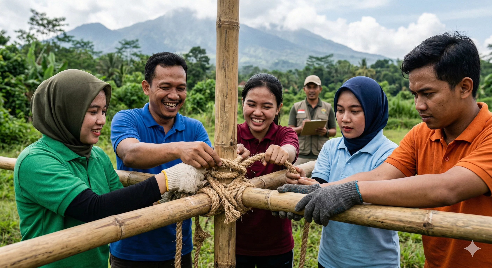

Paket Paintball Batu Malang - Mencari aktivitas yang seru, menantang, sekaligus melatih kerjasama tim bukanlah hal yang sulit jika Anda berkunjung ke Kota Wisata Batu. Salah satu pilihan favorit bagi kalangan perusahaan, komunitas, maupun keluarga adalah permainan Paintball. Di Batu Malang, Paintball tidak hanya sekadar menembak lawan dengan peluru cat, tetapi merupakan simulasi pertempuran yang dirancang secara profesional di area terbuka (outdoor) yang sangat mendukung suasana perang yang sesungguhnya. Aktivitas ini telah menjadi magnet utama bagi wisatawan yang ingin melepaskan penat sekaligus membangun ikatan emosional dengan rekan-rekan mereka melalui tantangan fisik dan strategi mental yang intens.
Sejarah paintball sendiri dimulai sebagai alat untuk menandai pohon dan ternak, namun kini telah bertransformasi menjadi olahraga rekreasi yang mendunia. Di Indonesia, khususnya di Jawa Timur, Batu Malang muncul sebagai kiblat baru aktivitas ini. Dengan kontur tanah yang berbukit-bukit dan vegetasi hutan yang rapat, setiap jengkal tanah di arena kami dirancang untuk memicu adrenalin. Anda tidak akan menemukan permukaan lantai beton di sini; melainkan tanah liat, dedaunan kering, dan batang-batang pohon pinus yang menjadi saksi bisu koordinasi tim Anda dalam memenangkan pertempuran.
"Dalam dunia paintball, peluru cat adalah cara menyampaikan pesan, dan strategi adalah bahasa yang digunakan tim untuk meraih kemenangan sejati." - Ahmad, Adventure Specialist.
Keunggulan Geografis Paintball di Kota Batu
Banyak yang bertanya, apa bedanya bermain paintball di dalam ruangan (indoor) dengan di alam terbuka Kota Batu? Perbedaannya sangat mendasar. Kota Batu berada di ketinggian yang memberikan suplai oksigen yang bersih, membuat paru-paru Anda terasa lebih ringan saat berlari menghindari tembakan lawan. Selain itu, suhu udara yang konsisten sejuk (antara 18-24 derajat Celcius) memungkinkan Anda untuk tetap mengenakan seragam militer yang tebal tanpa merasa gerah yang berlebihan. Ini adalah faktor krusial yang menjaga stamina pemain tetap prima hingga sesi berakhir.
Pemandangan alam yang tersaji pun menjadi nilai tambah. Bayangkan Anda sedang membidik sasaran dengan latar belakang kabut tipis yang turun di sela-sela pohon pinus. Atmosfer ini menciptakan kesan dramatis yang tidak bisa didapatkan di arena manapun. Sensasi "War Game" terasa jauh lebih nyata saat suara gesekan daun dan kicauan burung mengiringi langkah gerilya tim Anda menuju markas lawan.
Filosofi dan Manfaat Tim (Team Building)
Paintball bukan sekadar olahraga fisik, melainkan media pembelajaran yang luar biasa untuk pengembangan tim. Dalam konteks perusahaan, aktivitas ini seringkali disebut sebagai 'The Real Outbound'. Mengapa? Karena di sini, hierarki kepemimpinan di kantor bisa saja berganti secara alami berdasarkan insting dan keberanian di lapangan. Seorang manajer bisa belajar mendengarkan instruksi dari stafnya yang memiliki strategi tempur lebih baik, dan seorang staf bisa menunjukkan bakat kepemimpinannya saat tim sedang terjepit oleh kepungan lawan.
Manfaat yang didapatkan antara lain adalah pengasahan kemampuan komunikasi non-verbal. Saat di tengah rentetan tembakan, teriakan saja seringkali tidak cukup. Tim harus menggunakan isyarat mata, gerakan tangan, dan kesepahaman firasat untuk bergerak maju. Hal ini membangun apa yang disebut sebagai 'Trust and Sinergy'. Setelah adrenalin mereda dan permainan selesai, hubungan antar individu di dalam tim biasanya akan menjadi jauh lebih cair dan akrab dibandingkan sebelumnya.
Standar Peralatan Keamanan Internasional
Keselamatan peserta adalah prioritas tanpa kompromi bagi kami. Kami menyadari bahwa paintball melibatkan proyektil yang diluncurkan dengan gas bertekanan tinggi. Oleh karena itu, semua peralatan yang kami sewakan melalui paket paintball Batu Malang terbaik ini telah melalui uji kelayakan rutin. Kami menggunakan Goggle (masker wajah) yang memiliki lensa anti-fog ganda untuk memastikan pandangan Anda tetap tajam meski suhu tubuh meningkat.
Senjata atau marker yang kami gunakan adalah tipe semi-otomatis yang memiliki akurasi tinggi hingga jarak 15-20 meter. Kecepatan peluru (velocity) selalu kami kalibrasi di bawah 300 kaki per detik agar tetap aman namun memberikan benturan yang cukup sebagai tanda pemain sudah 'hit'. Seragam militer yang kami sediakan terbuat dari kain drill yang tebal untuk melindungi kulit dari gesekan tanah atau benturan langsung peluru cat. Setiap sesi selalu diawali dengan demonstrasi cara penggunaan alat oleh instruktur bersertifikat.
Skenario Permainan yang Memacu Adrenalin
Kami tidak ingin Anda hanya sekadar menembak tanpa tujuan. Itulah sebabnya kami merancang skenario permainan yang variatif untuk memaksimalkan pengalaman Anda. Setiap skenario memiliki misi yang berbeda dan menuntut pendekatan taktis yang unik:
1. The Last Man Standing (Pertempuran Tereliminasi)
Ini adalah skenario paling dasar dan klasik. Dua tim akan berhadapan dengan misi sederhana: eliminasi seluruh anggota tim lawan. Tim yang menyisakan setidaknya satu orang pemain aktif di lapangan adalah pemenangnya. Skenario ini melatih ketahanan fisik dan insting bertahan hidup dasar.
2. Medic Ball (Sistem Penyelamatan)
Dalam skenario ini, setiap tim memiliki satu orang 'Medic' yang bisa 'menghidupkan' kembali pemain yang tertembak dengan cara menyentuh pundaknya. Jika Medic tertembak, tim tersebut tidak bisa lagi melakukan resusitasi pemain. Skenario ini mengajarkan pentingnya melindungi aset tim yang paling berharga dan prioritas strategi.
3. Defend the Base (Pertahanan Markas)
Satu tim akan berada di posisi bertahan di sebuah bunker atau markas, sementara tim lain melakukan penyerbuan dari berbagai arah. Tim penyerang memiliki keuntungan jumlah peluru awal yang lebih banyak, sedangkan tim bertahan memiliki keuntungan perlindungan fisik. Ini adalah latihan tentang efektivitas posisi dan manajemen sumber daya.

Kerjasama tim yang solid dalam merencanakan serangan mendadak di balik bunker kayu buatan.
Persiapan Fisik dan Mental Sebelum 'Perang'
Bagi Anda yang baru pertama kali mencoba, ada baiknya melakukan pemanasan otot terutama di bagian kaki dan punggung. Arena outdoor di Batu Malang menuntut Anda untuk sering berjongkok, merangkak, dan melakukan sprint pendek di medan yang tidak rata. Pastikan Anda sudah sarapan namun tidak berlebihan, agar perut tidak terasa goyang saat melakukan gerakan-gerakan lincah.
Secara mental, kunci keberhasilan bermain paintball adalah ketenangan. Pemain yang panik cenderung membuang peluru secara sia-sia ke arah yang salah. Ambillah napas panjang, perhatikan arah angin, dan komunikasikan posisi lawan kepada rekan tim Anda. Ingat, ini adalah permainan; jadi pastikan kegembiraan tetap menjadi motivasi utama Anda berlari di lapangan.
Tips Memilih Vendor Paintball yang Tepat
Tidak semua operator paintball memiliki dedikasi yang sama terhadap kualitas. Saat mencari paket paintball Batu Malang, pastikan Anda memeriksa beberapa hal berikut: Pertama, keaslian dan kebersihan peralatan. Perlengkapan yang bau atau kacamata yang burem akan merusak mood bermain Anda. Kedua, kompetensi instruktur. Instruktur yang baik bukan yang hanya memberikan senjata lalu pergi, melainkan mereka yang mampu menjadi narator perang yang asyik dan wasit yang adil. Ketiga, lokasi arena yang aman dari gangguan orang luar atau binatang liar.
Kami bangga menjadi salah satu penyedia jasa yang memenuhi seluruh standar tersebut. Dengan testimoni dari ratusan perusahaan nasional yang telah berkunjung, kami terus berinovasi dalam memberikan layanan terbaik bagi Anda. Setiap peluru cat yang pecah di tubuh lawan adalah satu kenangan kebahagiaan yang akan Anda bawa pulang ke rumah.
Kesimpulan
Secara keseluruhan, paket paintball Batu Malang adalah cara terbaik untuk menghabiskan waktu luang yang produktif. Kombinasi udara segar, tantangan fisik, dan pembelajaran strategi tim menjadikannya lebih dari sekadar wisata. Ia adalah pengalaman transformatif yang akan mempererat tali persaudaraan Anda dengan siapapun yang berada di tim Anda. Jangan tunda lagi, segera hubungi kami untuk mendapatkan jadwal terbaik Anda sebelum slot akhir pekan penuh oleh rombongan lain.